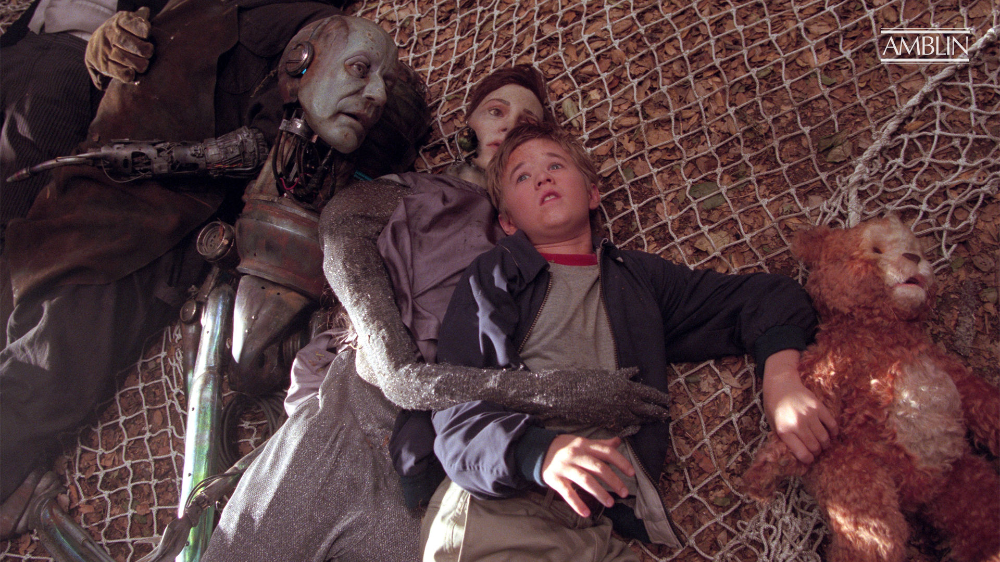

A.I. Artificial Intelligence
2001 · Drama · 2h 25m
A robotic boy, the first programmed to love, David (Haley Joel Osment) is adopted as a test case by a Cybertronics employee (Sam Robards) and his wife (Frances O'Connor). Though he gradually becomes their child, a series of unexpected circumstances make this life impossible for David. Without final acceptance by humans or machines, David embarks on a journey to discover where he truly belongs, uncovering a world in which the line between robot and machine is both vast and profoundly thin.
In the not-so-far future the polar ice caps have melted and the resulting rise of the ocean waters has drowned all the coastal cities of the world. Withdrawn to the interior of the continents, the human race keeps advancing, reaching the point of creating realistic robots (called mechas) to serve them. One of the mecha-producing companies builds David, an artificial kid which is the first to have real feelings, especially a never-ending love for his "mother", Monica. Monica is the woman who adopted him as a substitute for her real son, who remains in cryo-stasis, stricken by an incurable disease. David is living happily with Monica and her husband, but when their real son returns home after a cure is discovered, his life changes drammatically.
David is 11 years old. He weighs 60 pounds. He is 4 feet, 6 inches tall. He has brown hair. His love is real. But he is not.
Much of the film's early action takes place in Haddonfield, New Jersey. New York City is subsequently shown to be under water. Haddonfield's elevation (81 feet) is lower than that of New York City (87 feet), and it is near both the Atlantic coast and a river leading to the ocean, so Haddonfield should be under water too.